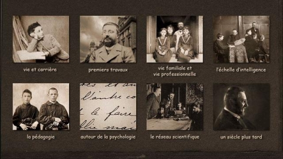
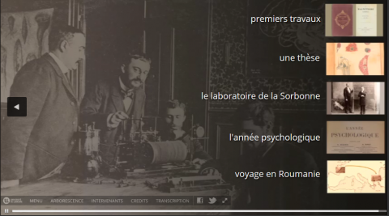
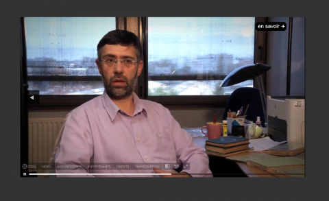
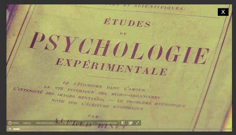
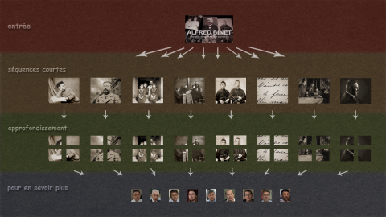
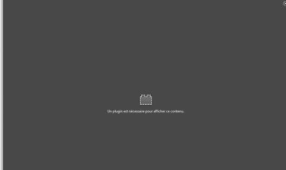

1Inventé au début du millénaire, alors que les médias traditionnels traversaient une crise économique et axiologique majeure, le webdocumentaire a contribué, au cours des dix dernières années, à renouveler le travail journalistique ainsi que les modalités de diffusion de l’information. Mais progressivement, ce support multimédia et multiforme a également gagné d’autres domaines, flirtant avec le monde du cinéma, de la télévision, du jeu vidéo, de la muséographie ou encore, plus récemment, de l’Université. En effet, de plus en plus de chercheurs et d’enseignants se saisissent aujourd’hui de cet outil pour réinventer leurs manières de transmettre ou de produire des connaissances. Il faut dire que par la multiplicité des contenus qu’il peut intégrer, par la diversité des scénarios qu’il peut proposer et par la grande liberté qu’il offre à ses usagers, le webdocumentaire se présente comme un outil pédagogique et scientifique de choix permettant tant de renouveler les habitudes d’enseignement que les usages de la recherche et de sa valorisation. C’est ce qu’entend démontrer cet article en s’attachant à expliciter la nature singulière et les apports pluriels de cet outil numérique innovant pour le monde académique.
2Pour ce faire, nous reviendrons tout d’abord sur les origines du webdocumentaire afin de tenter de définir cet objet médiatique unique, mais difficilement saisissable. Nous nous attacherons ensuite à démontrer son utilité pédagogique et scientifique, en partant de l’exemple concret d’un webdocumentaire historique intitulé Alfred Binet. Naissance de la psychologie scientifique, que nous avons réalisé et mis en ligne en 2014. Nous détaillerons également les défis et les obstacles que peuvent rencontrer les universitaires qui souhaitent s’emparer du webdocumentaire comme d’un outil d’enseignement et de recherche à part entière. Enfin, à travers un projet de webdocumentaire sur l’histoire du nursing psychiatrique au Québec en cours de réalisation, nous montrerons comment le webdocumentaire peut concrètement participer à la recherche dont il est l’un des objectifs. Nous pourrons ainsi mettre en évidence la manière dont cet outil numérique nouveau permet aujourd’hui de réinventer les perspectives pédagogiques et scientifiques en nous offrant des possibilités techniques jusqu’alors inédites, et surtout en nous invitant à penser ensemble le travail de recherche, d’enseignement et de valorisation.
- 1 Par exemple, Nova Magazine en France a fermé ses portes le 7 décembre 2004, tandis qu’à Hong-Kong, (...)
3Le webdocumentaire a vu le jour au début des années 2000 alors qu’Internet se démocratisait et que les médias traditionnels, journaux papier en tête, vivaient une crise sans précédent. Entre 2000 et 2004, ce sont en effet plus de deux mille postes qui ont été supprimés dans la presse écrite aux États-Unis, tandis que de nombreux titres disparaissaient à travers le monde1. En 2002, l’agence de presse Reuters, voyant sa valeur en bourse tout comme son exercice annuel chuter, lança pour sa part un programme intitulé Fast Forward consistant à réduire de manière importante ses effectifs et à fermer plusieurs centres de production. L’arrivée de la presse gratuite ainsi que le développement exponentiel d’Internet avaient durement atteint le système médiatique en place qui, en plus, dut faire face à une succession de scandales mettant en question l’intégrité du journalisme traditionnel (Ramonet 2005). Dans ce contexte socio-économique agité, des journalistes tentèrent de repenser leur métier en réinventant leurs pratiques et surtout les voies de transmission de l’information. On assista alors à une véritable mutation du système médiatique (Charron 2010) au sein de laquelle le webdocumentaire fit son apparition. Né, comme son nom l’indique, à la croisée des possibilités offertes par Internet et d’une volonté de réinventer le documentaire, il se présentait comme un support en ligne permettant d’associer différents médias (que ce soit du texte, des images, de la vidéo, du son ou des animations), et ce afin de diffuser de manière accessible et interactive des contenus de toute sorte.
4Les tout premiers programmes revendiquant le titre de webdocumentaire, du moins dans le monde francophone, se voulaient d’abord des compléments à des sources médiatiques plus classiques. Par exemple, le programme interactif de type « webdocumentaire » Lacitedesmortes.net, qui vit le jour en 2005, accompagnait la parution d’un livre intitulé La Ville qui tue les femmes, enquête à Ciudad Juarez et la diffusion simultanée, sur la chaîne française Canal+, d’un documentaire du même nom. L’objectif était moins de faire exister la plateforme pour elle-même que de donner « une autre dimension au livre ». Mais rapidement, le modèle prit son envol et acquit son autonomie. En 2008, Voyage au bout du charbon de Samuel Bollendorf et Abel Ségrétin fut ainsi un des tout premiers webdocumentaires francophones à proposer une immersion complète dans une structure narrative ramifiée qui permettait l’accès à différentes fins et offrait donc à l’usager une opportunité d’implication réelle ainsi qu’une pleine liberté de parcours. Il se qualifiait d’ailleurs, sur le modèle des livres d’aventures pour enfants des années 1980-1990, comme le « webdocumentaire dont vous êtes le héros ».
5Rapidement, ce nouveau format attira l’attention des grands groupes médias qui y investirent massivement, se dotant notamment de départements dédiés. Ainsi l’Office national du film du Canada créa dès 2008 sa branche ONF Interactif, suivi de près par la chaîne franco-allemande Arte qui ouvrit son département webdocumentaire en 2009 ou le journal Le Monde qui publia cette même année un premier webdocumentaire intitulé Le Corps incarcéré. En 2011, ce fut finalement au tour du service de la télévision publique française d’investir dans une section dédiée à ce nouveau support médiatique. Porté par ce mouvement de financement et d’intérêt croissants, ainsi que par la multiplication de projets de qualité, le webdocumentaire n’allait pas tarder à voir sa reconnaissance publique advenir.
6Le webdocumentaire Prison Valley de David Dufresne et Philippe Brault, produit par Arte et mis en ligne en 2011, fut l’un de ceux qui contribuèrent à faire connaître ce nouveau média auprès du grand public. Outre sa structure narrative élastique qui en favorisait l’aspect ludique, ce webdocumentaire, qui abordait l’univers des prisons américaines en nous plongeant dans la ville prison de Cañon City au Colorado, reposait sur un dispositif cross-média, associant le Web, la télévision et un livre, qui lui assurait ainsi une plus grande visibilité. Le webdocumentaire Snowfall de John Branch, réalisé l’année suivante par le New York Times, allait, lui, attirer plus de trois millions de visiteurs.
- 2 Entre 2008 et 2011, plus d’une centaine de webdocumentaires aurait ainsi été publiée en France selo (...)
7Avec la nouvelle décennie et la reconnaissance vint alors le temps de la multiplication2 et surtout de la diversification des projets. Progressivement, on quitta en effet le cadre du simple documentaire en ligne pour s’ouvrir à d’autres types de productions comme des docu-fictions ou même des bandes dessinées interactives à l’image de celle sur Anne Frank au pays du manga produite en 2013 par Arte. On assista également à une complexification des narrations et des supports. Du cross-média qui combine les médias pour faire passer un message, on glissa ainsi vers le trans-média qui vise à construire un univers narratif original à partir de différents médias où chacun est le support d’un format, voire vers de l’inter-média, ce système où différents supports médiatiques sont coprésents et s’interpénètrent au profit d’une mise en récit singulière. Cela conduisit à la création d’objets toujours plus uniques, à l’image de The End, etc., produit en 2012 par France Télévisions, qui se présentait comme une véritable « expérience de cinéma ». La réalisatrice Laetitia Masson y proposait en effet à l’usager de construire son propre film sur la base de rushes qu’elle avait tournés. Qualifié d’« objet Web non identifié » (Martel 2013), ce projet met très clairement en lumière la singularité des webdocumentaires – l’un ne ressemblant jamais à l’autre, du fait du sujet traité et de l’intention des auteurs ou autrices –, mais aussi la porosité du style webdocumentaire qui peut aisément glisser du côté d’autres médias comme le cinéma, la télévision ou encore le jeu vidéo. Cette même année 2012, Arte produisait d’ailleurs un « jeu documentaire » intitulé Le Défi des bâtisseurs qui associait un film en 3D relief, un webdocumentaire et une application afin d’offrir « une aventure trans-média au cœur des cathédrales gothiques ». Combinant les expériences médiatiques, l’usager pouvait découvrir, tant en ligne, en salle, que sur le terrain (In Real Life), l’histoire et les défis des bâtisseurs de cathédrales. C’est sur ce même modèle du « jeu documentaire » que David Dufresne réalisa en 2013 son second webdocumentaire intitulé Fort McMoney, qui nous plongeait dans l’industrie des sables bitumineux au nord du Canada et qui connut à nouveau un vif succès.
- 3 Dès 2011, Évelyne Broudoux parlait du webdocumentaire comme d’« un documentaire réalisé en vidéos, (...)
- 4 Guillaume Soulez (2017) milite, par exemple, pour un modèle de webdocumentaire, notamment historiqu (...)
8Ainsi, selon le sujet abordé et l’ambition des auteurs ou des producteurs, le webdocumentaire peut prendre des formes extrêmement variées, se jouant des catégories médiatiques traditionnelles et des modèles établis. En tant qu’objet médiatique toujours singulier, dont les formes évoluent constamment et dont l’expérience utilisateur varie d’un projet à l’autre, le webdocumentaire semble résister à toute définition unique. Selon Viva Paci, seuls quelques dénominateurs communs à toutes ces réalisations peuvent ainsi être identifiés : « sont aujourd’hui nommés webdocumentaires des sites Internet au contenu original (et plus récemment aussi des applications) composés d’un montage d’éléments multimédias (images fixes et en mouvement – graphiques et photographies –, texte, son) liés par une mise en forme et une structure » (Paci 2015, 390). Il faudrait probablement ajouter à cela, comme l’avait déjà précisé Évelyne Broudoux3, que la scénarisation d’un webdocumentaire doit tenir compte d’une certaine interactivité et que son dispositif général doit être orienté vers l’utilisateur ou utilisatrice et sa liberté de navigation. Autrement dit, le webdocumentaire peut être défini comme un support multimédia en ligne associant, au sein d’une structure narrative essentiellement non linéaire, du texte, des images, de la vidéo, du son ou des animations, en vue de partager, de façon immersive, interactive, possiblement ludique4 et toujours participative, des contenus variés. Au-delà, chaque projet est unique, que ce soit en termes de structure narrative, d’interface ou de contenu, ne répondant qu’aux ambitions créatrices de leurs auteurs. Cette pluralité du webdocumentaire – qui interdit presque d’en parler au singulier – est d’autant plus grande aujourd’hui que les technologies, notamment immersives et de réalité virtuelle, évoluent rapidement et que les outils de fabrication de ces objets médiatiques à part entière sont rendus de plus en plus accessibles.
9La démocratisation des instruments de réalisation des webdocumentaires participe en effet également de leur multiplication et de leur singularisation. Là où, au début, des informaticiens spécialistes s’imposaient tant pour coder certaines parties de l’architecture que pour assurer la mise en ligne du produit fini, l’apparition de nouveaux logiciels grand public a rapidement changé la donne. Aujourd’hui, 3WDoc Studio se propose ainsi de « démocratiser massivement ce format de diffusion » (comme le disait Dierickx en 2014) qu’est le webdocumentaire, tandis que Klynt, une plateforme d’édition et de publication « clé en main », entend faciliter la mise en histoire de vos objets. Récemment, Aesop Story Engine, un plugin associable à WordPress, offrait même de transformer, en quelques clics, votre blog en webdocumentaire, suivant le slogan : « Write stories instead of code ».
10Cette accessibilité croissante des outils de réalisation d’un webdocumentaire, qui accompagna la vulgarisation du support lui-même comme source de contenus et d’informations, a fini par attirer l’attention des universitaires sur ce nouvel objet médiatique. On a ainsi vu fleurir les colloques et journées d’étude à son sujet5, mais aussi les travaux de recherche6 ou les numéros de revues spécialisées7 en études médiatiques. En parallèle, des universitaires, hors des écoles de médias et de communication, et des scientifiques, notamment des historiens, se sont également emparés de l’objet webdocumentaire pour proposer leurs propres projets et réalisations. En 2012, une équipe d’historiennes et d’historiens de l’université de Lorraine a ainsi réalisé Dom Loupvent : Voyage d’un Lorrain en Terre sainte au xvie siècle, un webdocumentaire retraçant le parcours d’un moine bénédictin depuis son abbaye de Saint-Mihiel jusqu’à Jérusalem. La même année, la réalisatrice Céline Dréan révélait Dans les murs de la Casbah, un webdocumentaire fondé sur le travail de deux spécialistes de sociolinguistique urbaine situés pour l’un à Rennes et pour l’autre à Alger. Deux ans plus tard, la Wellcome Collection de Londres lançait, elle, MindCraft, une exposition interactive en forme de webdocumentaire revenant sur un siècle de soins de santé mentale et créée par l’historien Mike Jay. Pendant ce temps, les chercheurs Guillaume Soulez et Laurent Véray de l’université Sorbonne Nouvelle – Paris 3, proposaient pour leur part de mutualiser les approches créatrice et scientifique en coordonnant le projet Plateforme 14. Une famille dans la Grande Guerre, un espace réunissant des objectifs de formation à l’usage des nouvelles technologies en histoire, de recherche sur les webdocumentaires et l’histoire et de création d’une plateforme Web. C’est dans ce contexte d’émergence des webdocumentaires universitaires et historiques qu’a vu le jour Alfred Binet. Naissance de la psychologie scientifique.
11Engagé à l’occasion du centenaire de la mort d’Alfred Binet (1857-1911) qui s’est déroulé à Paris en 20118, le projet de réalisation d’un webdocumentaire sur la vie et l’œuvre de ce psychologue français entendait répondre à une double problématique rencontrée par la Société Binet-Simon, responsable de sa mémoire et de la valorisation de son œuvre. D’une part, si le nom de Binet est encore célèbre dans le monde entier, grâce au test d’intelligence qu’il a mis sur pied avec son collègue Théodore Simon (1873-1961), le reste de son œuvre est toujours mal connu, voire totalement tombé dans l’oubli. Au-delà de l’invention de l’échelle métrique d’intelligence (Klein 2016a), qui fut à l’origine de la majorité des tests de QI contemporains, peu de gens savent en effet que ce savant curieux et passionné s’intéressa également à l’entomologie, à la biologie, à la médecine, à la philosophie, à la pédagogie et au théâtre, qu’il fut l’auteur de quatorze livres et de plusieurs dizaines d’articles et qu’il dirigea également trois revues scientifiques et deux laboratoires (Andrieu et Klein 2011). D’autre part, si les travaux de plusieurs générations de chercheurs, notamment au sein de la Société Binet-Simon, ont permis de retrouver au cours des dernières décennies de nombreuses archives du psychologue9, et en particulier, récemment, un fonds familial contenant une riche collection de photographies, leur valorisation restait encore limitée. Certaines de ces archives avaient bien fait l’objet de différentes publications papier, en particulier dans le cadre du centenaire de sa mort, mais celles-ci s’adaptaient mal aux archives iconographiques, dont le nombre et la qualité exigeaient un autre support de diffusion. Le projet d’un webdocumentaire paraissait alors un bon moyen de poursuivre le travail de valorisation des archives engagé par la Société Binet-Simon, tout en permettant de rendre compte des intérêts multiples de ce chercheur touche-à-tout qu’était Alfred Binet. Il offrait surtout l’opportunité de sensibiliser un vaste public à l’importance de ses travaux et réalisations.
12Grâce au soutien matériel et financier de l’université de Lorraine et de l’université ouverte des humanités, nous avons pu débuter, dès le début de l’année 2012, la construction de ce webdocumentaire, en partenariat avec le réalisateur Philippe Thomine et avec l’assistance scientifique du professeur Bernard Andrieu. Le résultat, mis en ligne en 2014, offre une plongée riche et vivante dans la vie et l’œuvre d’Alfred Binet, grâce à de nombreux documents d’archives, pour beaucoup inédits, et à des interventions de spécialistes reconnus.
13Pour répondre au double défi qui consistait, d’une part, à rendre compte de la diversité de l’œuvre de Binet et, d’autre part, à mettre de l’avant la profonde unité de sa démarche scientifique, nous avons choisi de diviser le webdocumentaire en huit sections thématiques comportant chacune entre trois et cinq sous-sections dont certaines contiennent à leur tour d’autres sous-sections. Après une courte introduction vidéo, que l’on peut passer à tout moment, la page d’accueil du webdocumentaire comporte ainsi huit cases relatives à chaque thématique abordée, depuis l’enfance de Binet jusqu’à la réception actuelle de son œuvre en passant par ses premières recherches, sa vie de famille, ses travaux sur l’intelligence ou la pédagogie, ses recherches philosophiques ou dramaturgiques, et son réseau scientifique (figure 1).
Figure 1. Capture d’écran du menu principal du webdocumentaire Alfred Binet. Naissance de la psychologie scientifique

Webdocumentaire réalisé par Philippe Thomine, co-écrit par Alexandre Klein et Philippe Thomine, sous la direction scientifique de Bernard Andrieu, université de Lorraine.
14En cliquant sur une case, on accède à une courte vidéo qui introduit la thématique en en résumant le contenu et en faisant apparaître un choix de sous-sections (figure 2).
Figure 2. Capture d’écran du menu thématique de la section « Premiers travaux » du webdocumentaire Alfred Binet. Naissance de la psychologie scientifique

Webdocumentaire réalisé par Philippe Thomine, co-écrit par Alexandre Klein et Philippe Thomine, sous la direction scientifique de Bernard Andrieu, université de Lorraine.
15Chaque sous-section est ensuite composée, elle aussi, d’une courte séquence vidéo mêlant récit historique, présentation de documents d’archives et extraits d’entrevues de spécialistes. La lecture des sous-sections s’enchaîne automatiquement, offrant ainsi à l’utilisateur ou l’utilisatrice un récit continu. Régulièrement des onglets « En savoir plus » se font jour au sein des différentes séquences vidéos pour permettre d’accéder à un troisième niveau où sont présentés plus en détail des documents d’archives ou des analyses critiques (figures 3 et 4).
Figure 3. Capture d’écran d’une séquence d’entrevue où apparaît l’onglet « En savoir plus » dans le webdocumentaire Alfred Binet. Naissance de la psychologie scientifique

Webdocumentaire réalisé par Philippe Thomine, co-écrit par Alexandre Klein et Philippe Thomine, sous la direction scientifique de Bernard Andrieu, université de Lorraine.
16Ces capsules supplémentaires peuvent être, à tout instant, fermées, ramenant alors l’utilisateur ou l’utilisatrice dans le cours de la séquence vidéo qu’il visionnait.
Figure 4. Capture d’écran d’une capsule « En savoir plus » dans le webdocumentaire Alfred Binet. Naissance de la psychologie scientifique

Webdocumentaire réalisé par Philippe Thomine, co-écrit par Alexandre Klein et Philippe Thomine, sous la direction scientifique de Bernard Andrieu, université de Lorraine.
17Ainsi, cette structure en trois niveaux et huit entrées – très simple aux vues des possibilités offertes aujourd’hui en termes de construction d’architecture de webdocumentaire – permet de donner à voir l’ensemble de l’œuvre de Binet, tout en offrant la possibilité à l’utilisateur d’approfondir, s’il le souhaite, certains aspects plus techniques de son travail ou des débats historiographiques le concernant. Grâce à cette double approche, superficielle ou approfondie, le webdocumentaire permet de toucher des publics différents, en leur offrant des types de contenus adaptés. Une utilisatrice peut par exemple enchaîner le visionnage de toutes les séquences courtes et ainsi avoir une vue d’ensemble, assez rapide, mais complète, de la vie et de l’œuvre de Binet, tandis qu’une autre, à la recherche d’informations plus détaillées, peut au contraire parcourir toutes les séquences relatives à une question, celle de l’échelle métrique d’intelligence par exemple, accédant ainsi, notamment grâce aux capsules « En savoir plus », à des analyses précises à ce sujet. Le mot d’ordre reste la liberté d’utilisation puisque chacun peut librement construire son parcours au sein du webdocumentaire, sans avoir ni à entrer par un point spécifique pour en ressortir par un autre, ni à regarder l’ensemble des séquences, ni même à suivre leur ordre de présentation. La possibilité de revenir, depuis n’importe où dans le webdocumentaire, à l’arborescence générale afin de repartir vers une autre séquence accentue cette liberté d’utilisation (figure 5).
Figure 5. Capture d’écran de l’arborescence interactive du webdocumentaire Alfred Binet. Naissance de la psychologie scientifique

Webdocumentaire réalisé par Philippe Thomine, co-écrit par Alexandre Klein et Philippe Thomine, sous la direction scientifique de Bernard Andrieu, université de Lorraine.
- 10 Je remercie Marie Vergnon de l’université Caen-Normandie, Xavier Riondet de l’université de Lorrain (...)
18Au final, ce webdocumentaire exemplifie parfaitement le rôle majeur que peut jouer ce type d’outil numérique dans les domaines du patrimoine, de la recherche et de l’enseignement. En donnant à voir quand on le veut et depuis n’importe quel endroit dans le monde, de manière interactive et accessible, la vie et l’œuvre d’Alfred Binet, mais aussi en nous offrant une plongée originale dans la France de la Troisième République, ainsi que dans l’histoire des sciences de l’esprit et de l’éducation, le webdocumentaire Alfred Binet. Naissance de la psychologie scientifique se présente comme une ressource informative de choix. Valorisant en outre de manière unique des fonds d’archives ainsi que des travaux de chercheurs, sans quoi éparpillés ou difficilement accessibles, il contribue pleinement à un effort de vulgarisation scientifique, et ce d’autant plus que son architecture lui permet de s’adresser à un vaste public. Enfin, et pour ces mêmes raisons, il s’impose également en tant qu’outil pédagogique à part entière. Il est d’ailleurs déjà utilisé, depuis sa mise en ligne, en tant que support d’enseignement dans différentes universités, notamment dans les parcours de sciences de l’éducation. Il y sert de source de contenus informatifs en histoire de la psychologie ou de l’éducation, mais aussi de support à des projets de recherche individuels ou collectifs10. Accessible gratuitement en ligne, et donc disponible en classe et à la maison, et proposant des contenus à la fois historiques et historiographiques, il s’avère être un outil plébiscité tant par les étudiants que par les enseignants.
19Si le webdocumentaire se présente comme un outil pédagogique, scientifique et patrimonial de choix, plusieurs obstacles rendent néanmoins encore son utilisation délicate et donc rare. Tout d’abord, réaliser un webdocumentaire coûte cher, car de l’enquête et du recueil des sources jusqu’à la mise en ligne et le suivi de diffusion, en passant par le tournage et le montage des séquences vidéos, la réalisation de l’animation et la gestion de la postproduction, ce sont de nombreux spécialistes qui doivent se succéder pour effectuer des travaux longs et donc coûteux. Ainsi, l’Office national du film du Canada, Toxa et Arte ont déboursé 620 000 euros, soit plus de 900 000 dollars canadiens, pour coproduire Fort McMoney en 2013. Il n’en fallait pas moins pour financer deux ans d’enquête, près de soixante jours de tournage et la mise en place d’un dispositif multimédia d’une ampleur inédite et d’une qualité rare. Selon David Dufresne, le réalisateur, « la démesure du sujet justifi[ait] l’ambition du projet » (Gavoille 2013). Son précédent webdocumentaire, Prison Valley, avait déjà coûté près de 240 000 euros, soit plus de 350 000 dollars canadiens. Or, de telles sommes sont difficiles à rassembler dans le cadre universitaire, et dès lors, il convient soit de s’associer avec d’autres partenaires, comme ce fut le cas avec Dans les murs de la Casbah qui a été coproduit par la chaîne de télévision France 24, soit de réduire les ambitions esthétiques et scientifiques des projets. Il reste néanmoins possible, même avec des budgets serrés, de produire des webdocumentaires de qualité, par exemple en s’appuyant, comme ce fut le cas pour le webdocumentaire sur Alfred Binet, sur des recherches scientifiques déjà effectuées, sur la contribution bénévole de plusieurs participants ainsi que sur les ressources offertes par les logiciels grand public tels que Klynt, 3WDoc Studio ou The Korsakow System.
20Une fois le webdocumentaire réalisé, d’autres obstacles s’opposent encore à son œuvre de diffusion et de valorisation. D’une part, l’évolution de la technologie tend à ne plus rendre accessibles certains webdocumentaires fondés sur des plugins ou des interfaces ne correspondant plus aux navigateurs Internet. Il n’est ainsi pas rare de tomber sur des pages telles que celle ci-dessous signalant les limites auxquelles vont rapidement se confronter certains webdocumentaires victimes de l’évolution constante des supports et des technologies.
Figure 6. Capture d’un écran trop fréquent

L’évolution constante des supports et des technologies conduit à ce genre de résultats.
21D’autre part, le référencement des webdocumentaires produits peut encore poser problème. Outre le fait que les moteurs de recherche valorisent les sites répondant à leurs propres critères de référencement et que ce dernier évolue dans le temps, pouvant ainsi conduire à la progressive disparition, dans des pages plus lointaines, de certaines références, il est souvent difficile de trouver des webdocumentaires sans en connaître le nom exact et donc sans les connaître au préalable. En effet, il existe peu de bases de données rassemblant les productions webdocumentaires11, et il y a encore une certaine réticence de la part des bibliothèques à les intégrer dans leur catalogue. Ainsi, dans le cas du webdocumentaire Alfred Binet. Naissance de la psychologie scientifique, la Bibliothèque nationale de France, qui a accepté d’archiver l’ensemble de son contenu au sein de son dépôt légal numérique, évitant ainsi toute perte suite à un problème technique sur son site universitaire d’accueil, a pourtant refusé de le référencer dans son catalogue général, avançant que les sites Web ne peuvent y être inclus. On ne peut que regretter que ces œuvres culturelles à part entière ne trouvent pas aujourd’hui leur place dans tous les catalogues de bibliothèques, obligeant ainsi les utilisateurs à se retourner vers des ressources spécialisées ou vers les sites de chaque diffuseur ou producteur12.
22Ces obstacles d’ordre financier, technique ou bibliothéconomique pourront très certainement être dépassés, du moins en partie, lorsque le webdocumentaire sera définitivement reconnu comme l’objet scientifique et universitaire à part entière qu’il est. Or si nous avons pu démontrer son intérêt patrimonial, pédagogique et vulgarisateur, son intérêt proprement scientifique, c’est-à-dire son statut d’outil favorisant la constitution même du savoir, mérite d’être davantage valorisé. En effet, s’il comporte des défis de taille, que ce soit en termes de financement, de réalisation technique, d’écriture, de conservation et de valorisation, le webdocumentaire, se présente également, en lui-même, comme un défi enrichissant pour les chercheurs et chercheuses, parce qu’il est une source de renouvellement des manières de faire de la recherche, notamment historique.
23Pour expliciter cet apport du webdocumentaire à la transformation du travail de recherche, je prendrai ici l’exemple du projet de webdocumentaire sur l’histoire du nursing psychiatrique que nous mettons actuellement sur pied avec Marie-Claude Thifault et Karine Aubin de l’université d’Ottawa, et Sandra Harrisson de l’université du Québec à Trois-Rivières. Objectif principal d’un projet de recherche intitulé Des institutions et des femmes. L’émergence du nursing psychiatrique au Québec (1912-1974) et financé par les Instituts de recherche en santé du Canada (2015-2020), ce webdocumentaire vise à faire dialoguer les archives et les histoires de trois institutions particulières et des femmes, laïques ou religieuses, qui y œuvrèrent. Or, contrairement au webdocumentaire sur Alfred Binet qui se basait sur un fonds d’archives multiple, mais défini, et des données déjà collectées qu’il fallait valoriser par une mise en récit et en lumière, ce nouveau projet est lui préalable, ou disons concomitant, à la recherche historique. Autrement dit, la mise en récit et la composition de la future structure du webdocumentaire sont produites en même temps qu’avancent le dépouillement et l’analyse des archives des trois institutions que sont l’hôpital Saint-Jean-de-Dieu et l’Institut Albert-Prévost à Montréal, ainsi que l’hôpital Saint-Michel-Archange à Québec. Le travail de recherche et d’analyse historiques est donc réalisé avec, en vue directe et immédiate, la perspective de sa valorisation et de sa transmission. Dans cette configuration, le webdocumentaire est moins un outil de pure valorisation a posteriori de la recherche, que le point central d’une recherche en train de se faire à laquelle il participe dès lors pleinement en transformant son contenu comme sa portée. Depuis le dépouillement des fonds d’archives jusqu’aux choix et traitements des documents, notamment iconographiques, à retenir, en passant par la nature et l’esthétique du message que nous entendons transmettre, tout est en effet influencé, voire déterminé par notre objectif de réalisation d’un webdocumentaire.
24Tout d’abord, la perspective, inhérente à ce type d’outil, de s’adresser, de manière interactive et participative, à un large public transforme le regard que nous portons sur notre objet d’investigation. Loin des contraintes et des exigences propres à la publication d’articles scientifiques ou même de monographies, le webdocumentaire nous convie en effet à réinscrire, autant que possible, notre propos et les archives présentées dans un contexte socioculturel, mais aussi historiographique vaste. Le propos que nous voulons présenter, notre thèse, reste au cœur de la construction du webdocumentaire, mais puisque cette dernière propose l’existence de différents niveaux de compréhension, elle nous invite également à apporter des éléments de contexte qui, dans une publication classique, seraient mis de côté car considérés comme superflus ou implicites. Le fait de vouloir s’adresser à un public vaste et varié, et non seulement à ses pairs, nous conduit nécessairement à adapter notre ton ainsi que la nature et l’ampleur du contenu que nous voulons transmettre ; cela conduit donc à envisager différemment notre objet d’étude, autant que les archives qui en soutiennent l’exploration. En abordant ainsi notre champ d’investigation avec d’autres yeux et d’autres objectifs, nous sommes conduits à mettre en évidence des liens qui, dans un autre contexte de valorisation, seraient probablement passés inaperçus. Ainsi, en choisissant d’offrir, au-delà des histoires de nos trois institutions, un panorama plus vaste sur l’histoire du développement et de l’évolution du nursing psychiatrique au Québec, nous avons été amenés à réfléchir aux liens qui pourraient unir les parcours de différentes infirmières laïques ou religieuses et ainsi à nous pencher avec plus d’attention sur des événements particuliers, comme certains congrès professionnels ou des publications apparemment anodines, qui n’étaient pas nécessairement, au départ, au cœur de nos perspectives. L’ambition de vulgarisation inscrite dans nos travaux dès leurs balbutiements a ainsi permis de dévoiler des pistes de recherche ainsi que des voies de compréhension nouvelles et totalement inédites.
25Les possibilités techniques offertes par le webdocumentaire, que ce soit la construction en différents niveaux, la valorisation des documents d’archives ou l’invitation à offrir aux usagers des parcours interactifs participatifs, invitent, elles aussi, à de tels réaménagements du travail de recherche. Contrairement aux modes traditionnels de présentation de la recherche, souvent plus étroits dans leur perspective comme leurs possibilités, le webdocumentaire favorise en effet, notamment du fait de son architecture complexe, l’expression de plusieurs points de vue, parfois même contradictoires, sur un même objet. Or, cette plus grande place accordée aux analyses diverses, voire divergentes, ainsi qu’aux débats historiographiques qu’elles impliquent, comme c’est le cas dans les sections « En savoir plus » du webdocumentaire sur Alfred Binet, conduit à aborder différemment les archives étudiées de même que la mise en récit des analyses qui en sont faites. Le webdocumentaire invite en effet à mettre en scène les différentes versions de l’histoire, ce qui impose de les envisager dans la recherche même, ouvrant ainsi, là encore, des perspectives parfois inédites. Dans le cas de notre projet sur le nursing psychiatrique québécois, l’opportunité offerte par l’objectif de réalisation d’un webdocumentaire de proposer un récit polyphonique détermina, dès les premiers contacts avec notre objet de recherche, la manière dont celui-ci allait être abordé, étudié et présenté. D’une approche centrée sur l’histoire de nos trois institutions ainsi que des formations et des soins infirmiers psychiatriques qui y étaient offerts, nous avons rapidement réorienté notre projet vers une histoire du nursing psychiatrique plus vivante et incarnée, organisée autour de trois parcours de vie, fictifs ou réels, laïques ou religieux, d’infirmières psychiatriques travaillant dans le public ou le privé. Le projet offre ainsi à la fois une vue d’ensemble sur l’épanouissement du nursing psychiatrique au Québec et une possibilité de navigation et d’immersion accrue pour les futurs utilisateurs et utilisatrices de notre webdocumentaire.
26Ainsi, que ce soit parce qu’il favorise le point de vue de l’usager et son expérience participative, parce qu’il permet de se détacher du récit linéaire habituellement favorisé dans les publications scientifiques pour instaurer des narrations multiples, ou parce qu’il offre la possibilité de présenter plus de contenus et de matériaux notamment archivistiques que ne le nécessite la simple défense de sa thèse ou de son propos central, le webdocumentaire confronte les historiennes et historiens à une nouvelle manière de faire et d’écrire l’histoire, tout à la fois ouverte aux multiples possibles, sensible aux apports de la fiction comme des supports iconographiques, et surtout tournée vers la production d’une pluralité d’expériences de consultation et de compréhension. Et dès lors, parce qu’il nous pousse à modifier notre regard, à transformer notre perspective sur notre objet d’étude à l’aune de ces questionnements techniques, de ces problématiques d’organisation structurelle des contenus, mais aussi et surtout d’enjeux interactifs, esthétiques et pédagogiques, le webdocumentaire nous ouvre des voies de représentation et donc de compréhension neuves, qui favorisent ainsi l’émergence de savoirs originaux. C’est en ce sens qu’il contribue pleinement au travail de recherche dont il est tant le cœur que l’aboutissement concret.
27Le webdocumentaire, entendu comme support multimédia et interactif, en ligne, de mise en récit non linéaire de contenus, constitue ainsi un outil précieux autant qu’un défi de taille pour les universitaires. En permettant de valoriser le travail de recherche et la pluralité de ses sources, il se révèle être un instrument de transmission de connaissance des plus innovants, mais aussi des plus efficaces. D’autant qu’il s’intègre aisément à des enseignements comme source de contenus ou de dynamisme pédagogique. Enfin, en tant qu’outil de recherche, il invite à réinventer les manières de faire de la science en s’intéressant davantage au public à qui s’adressent les résultats, et ce sans mettre de côté la précision, la rigueur et donc la complexité d’un travail spécialisé.
28Plus encore, peut-être, que d’autres outils des humanités numériques, qui favorisent soit le travail de collectes de données, soit leur mise en réseau, soit encore leur représentation graphique, ou que de plateformes à visée uniquement pédagogique telles que les MOOC, le webdocumentaire, par son essentielle pluralité nous conduit à penser ensemble, et non plus comme des domaines connexes, mais séparés, la question de la recherche (et de sa vulgarisation), de l’enseignement et de la valorisation patrimoniale. Il est de ce point de vue un apport important et original au travail de l’universitaire (notamment l’historienne ou l’historien), et à son évolution.
29Reste à espérer que la reconnaissance de ses nombreux avantages permette d’améliorer la réception de ce type de projet, tant du côté des agences de financement de la recherche que des institutions responsables de la conservation, de la transmission et de la valorisation du savoir, et qu’elle engage les universitaires de tout bord à s’emparer à leur tour de cet outil aussi innovant que passionnant.


{kind=link}
{kind=link}
{kind=link}
{kind=link}
{kind=link}
{kind=link}
{kind=link}
{kind=link}
{kind=link}
{kind=link}
{kind=link}
{kind=link}